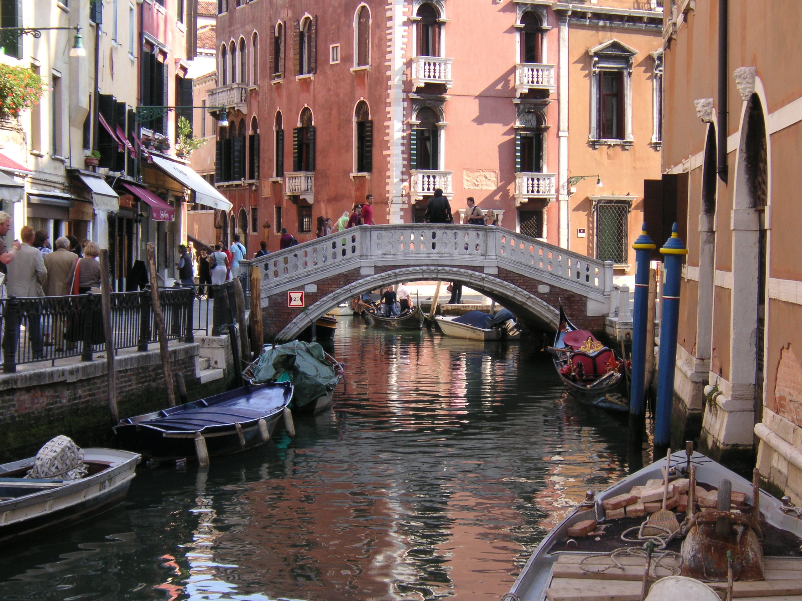

- Attraktionen von Venedig
- Das beliebteste aus dieser Stadt
- Highlights von Venedig
- Hier werden ein paar Sehenswürdigkeiten aus der sogennanten Wasserstadt aufgezählt nach deren Beliebtheit:
- Markusdom & Markusturm
- Markusplatz
- Canal Grande
- Cicheti, eine Speise
- Cicheti erinnern an spanische Tapas. Kleine Häppchen von Fleisch, oder auch Fisch werden in Vielzahl verspeist.
- Die Bussolai, Kekse
- Typische Kekse der Insel Burano in S-Form. Werden häufig an Ostern vernascht. Sie schmecken nach Zitrone, Rum, Vanille und haben manchmal auch Schokostückchen.
- Ende der Liste
Über Venedig
Venedig ist eine italienische Stadt die sich in der Region Venezien (ital. Veneto) befindet. Venedig ist berühmt für seine Brücken und den San Marco
Platz in welchem sich die Basilica di San Marco befindet. Jetzt noch etwas historisches und zum Weltkulturerbe:
Venedig war bis 1797 Hauptstadt der Republik Venedig und mit über 180.000 Einwohnern eine der größten europäischen Städte. Bis ins 16. Jahrhundert war es eine der bedeutendsten Handelsstädte, über die der überwiegende Teil des Handels
zwischen Westeuropa und dem östlichen Mittelmeer abgewickelt wurde. Venedig unterhielt die meisten Handels- und Kriegsschiffe. Zum Staatsoberhaupt wurde der jeweilige Doge in einem komplizierten Wahlverfahren zunächst durch die
Volksversammlung, dann durch den städtischen Adel gewählt. Letzterer monopolisierte die höheren Ämter und profitierte vom Handel mit Luxuswaren, Gewürzen, Salz und Weizen, während der Rest der Bevölkerung weitgehend vom Fernhandel
ausgeschlossen blieb. Venedig entwickelte sich zum größten Finanzzentrum und dominierte ein Kolonialreich, das von Oberitalien bis Kreta und zeitweise bis nach Zypern reichte. Nach französischer und österreichischer Herrschaft zwischen 1798
und 1866 wurde Venedig ein Teil Italiens. 1929 wurde der Industriekomplex Mestre-Marghera in die Comune di Venezia eingemeindet, ebenso wie zuvor schon der größere Teil der Orte in der Lagune. Der jüdische Anteil der Bevölkerung wurde während
des Zweiten Weltkriegs von den Nationalsozialisten, die Italien ab 1943 besetzt hatten, deportiert, wobei 200 jüdische Personen ermordet wurden. Bis 1950 wuchs die Zahl der Einwohner des historischen Zentrums durch Kriegsflüchtlinge auf rund
185.000 an. In den Jahren 1965 bis 1970 erreichte die Gesamtstadt mit knapp 370.000 Einwohnern die höchste Bevölkerungszahl. Seitdem ist diese um mehr als 100.000 zurückgegangen (Januar 2021: 255.609).
Venedig und seine Lagune stehen seit 1987 auf der UNESCO-Liste des Weltkulturerbes. Sie inspirierten besonders die Künstler und Venedig wurde zu einer der von Touristen meistbesuchten Städte. Seit einem Jahrhundert ist die wirtschaftliche
Struktur der Altstadt einseitig auf den Tourismus ausgerichtet, während sich die industrielle Tätigkeit vor allem um Mestre und Marghera auf dem westlichen Festland konzentriert.
Was sollte ich in Venedig beachten?
Am besten vermeidet man in der Nähe des San Marco Platzes etwas zu kaufen, egal ob Essen oder sonstiges! Und man sollte auch keine Tauben füttern, denn dies ist weder gut für die Tauben selbst und zusätzlich ist dies auch strafbar!
